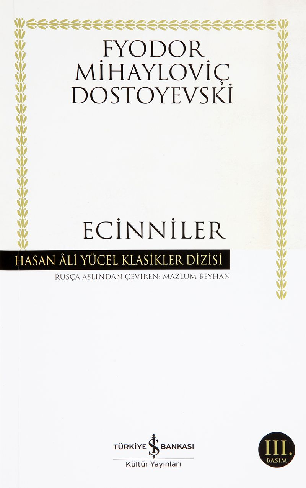

Kitap açılıyor
Senin için hazırlandı
Seninle birlikte okunmak üzere · kaldığın yer senin için saklanır

Kitaba dokun
Senin için
Nereden devam edelim?
Kitap açılıyor
Aşağıdaki bağlantıyı telefonunda ya da başka bir cihazda açarsan, kaldığın sayfadan devam edersin.